Bab 2: Makhluk Hidup dan Lingkungannya
Pengantar Konseptual: Kehidupan dan Lingkungannya
Setiap makhluk hidup—manusia, tumbuhan, dan hewan—tidak dapat hidup sendiri. Mereka saling membutuhkan dan bergantung pada lingkungannya untuk bertahan hidup.
Manusia membutuhkan udara untuk bernapas, air untuk minum dan bertani, serta hewan dan tumbuhan sebagai sumber pangan. Tumbuhan memerlukan air, tanah yang subur, dan cahaya matahari untuk tumbuh. Sementara hewan bergantung pada tumbuhan atau hewan lain sebagai makanan, serta membutuhkan tempat berlindung yang aman.
Komponen Lingkungan
Lingkungan tempat makhluk hidup berada terdiri dari dua jenis unsur:
- Komponen biotik, yaitu makhluk hidup (manusia, tumbuhan, hewan, dan mikroorganisme).
- Komponen abiotik, yaitu benda tak hidup seperti tanah, air, udara, cahaya, suhu, dan energi matahari.
Keduanya membentuk sistem kehidupan yang saling memengaruhi. Bila satu bagian terganggu, seluruh sistem bisa ikut berubah.
Contoh: Ketika pohon di sekitar sungai ditebang, tanah menjadi gundul dan mudah longsor; air hujan tidak terserap, menyebabkan banjir. Dampaknya tidak hanya dirasakan oleh tumbuhan, tetapi juga oleh hewan dan manusia yang tinggal di sekitarnya.
Di desa, keterkaitan antara makhluk hidup dan lingkungan sangat mudah diamati. Petani, misalnya, bergantung pada tanah yang subur dan air yang cukup. Hewan ternak memberi manfaat bagi manusia tetapi juga membutuhkan rumput dan air bersih. Setiap tindakan manusia—seperti membuang sampah ke sungai atau membakar lahan pertanian—akan memberi efek balik terhadap keseimbangan lingkungan.
Hubungan saling bergantung ini dapat dilihat sebagai sistem ekosistem: sekumpulan makhluk hidup yang berinteraksi dengan lingkungannya sebagai satu kesatuan. Di dalam ekosistem terdapat aliran energi dan siklus materi yang menjaga kehidupan tetap seimbang. Energi dari matahari digunakan tumbuhan untuk fotosintesis, hasilnya dimakan oleh hewan, dan akhirnya kembali ke tanah melalui sisa makhluk hidup yang mati dan diuraikan oleh mikroorganisme.
Keseimbangan sistem ini sangat bergantung pada cara manusia memperlakukan alam. Jika manusia menggunakan sumber daya secara bijak, kehidupan di bumi dapat berlangsung berkelanjutan. Namun, jika manusia serakah atau tidak peduli, kerusakan lingkungan akan berbalik memengaruhi kehidupan manusia sendiri.
Dengan memahami keterkaitan antara makhluk hidup dan lingkungannya secara ilmiah, kita belajar bahwa menjaga alam bukan hanya tanggung jawab moral, tetapi juga kebutuhan untuk kelangsungan hidup bersama.
Tingkat Organisasi Kehidupan
Kehidupan di bumi tersusun secara bertingkat, dari yang paling sederhana hingga yang paling kompleks. Setiap tingkat menunjukkan hubungan dan ketergantungan antara makhluk hidup dengan lingkungannya.
a. Individu
Individu adalah satu makhluk hidup tunggal. Contoh: satu pohon mangga di kebun, seekor ayam di kandang, atau seorang petani di sawah. Individu memiliki kebutuhan hidup yang harus dipenuhi agar tetap bertahan, seperti makanan, air, udara, dan tempat tinggal.
b. Populasi
Populasi adalah sekumpulan individu sejenis yang hidup di suatu tempat pada waktu yang sama. Contoh: sekumpulan ikan nila di kolam, segerombolan ayam di halaman, atau banyak pohon pisang di satu kebun. Jumlah populasi bisa naik atau turun tergantung pada ketersediaan makanan, air, dan tempat hidup.

Letakkan file gambar dengan nama "gambar1" (format: jpg, png, webp, gif, dll) di folder "s1-bab-2"
c. Komunitas
Komunitas merupakan kumpulan dari berbagai populasi makhluk hidup yang saling berinteraksi di suatu wilayah. Contohnya di sawah terdapat tanaman padi, belalang, burung pipit, dan katak. Semua saling bergantung: belalang memakan daun padi, burung memakan belalang, dan katak memangsa serangga kecil lainnya.
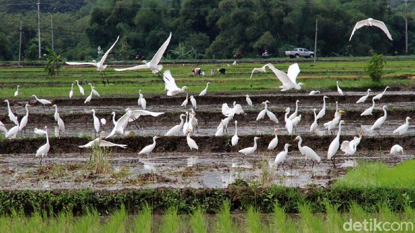
Letakkan file gambar dengan nama "gambar2" (format: jpg, png, webp, gif, dll) di folder "s1-bab-2"
d. Ekosistem
Ekosistem adalah hubungan timbal balik antara makhluk hidup (biotik) dengan lingkungan fisiknya (abiotik), seperti air, tanah, cahaya, dan udara. Dalam ekosistem, makhluk hidup saling berinteraksi untuk memenuhi kebutuhan hidupnya dan menjaga keseimbangan. Contoh ekosistem di sekitar sekolah: kebun, kolam, halaman sekolah, atau sawah.
e. Biosfer
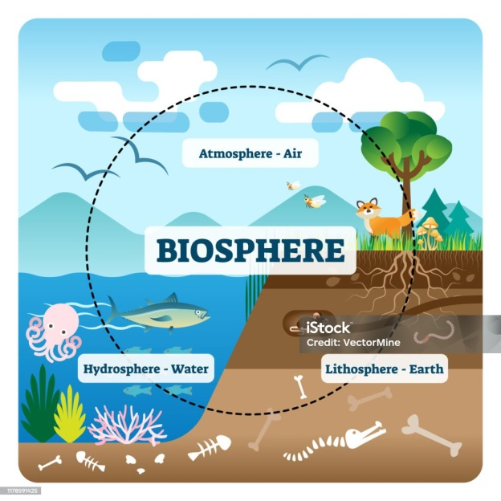
Letakkan file gambar dengan nama "gambar3" (format: jpg, png, webp, gif, dll) di folder "s1-bab-2"
Biosfer adalah seluruh bagian bumi yang dihuni makhluk hidup, mencakup daratan, perairan, dan udara. Semua ekosistem di dunia—hutan, laut, padang rumput, gunung, dan desa—terhubung menjadi satu sistem besar yang menopang kehidupan di planet ini.
Pertumbuhan dan Perkembangan Makhluk Hidup
Setiap makhluk hidup mengalami perubahan sepanjang hidupnya. Perubahan itu disebut pertumbuhan dan perkembangan.
a. Pengertian Pertumbuhan dan Perkembangan
- Pertumbuhan adalah perubahan yang bersifat kuantitatif, artinya dapat diukur secara nyata, misalnya tinggi batang, berat badan, atau jumlah daun. Pertumbuhan bersifat tidak dapat balik (irreversibel). Contoh: tanaman padi yang sudah tinggi tidak akan kembali pendek.
- Perkembangan adalah perubahan yang bersifat kualitatif, yaitu menuju tahap yang lebih sempurna dalam fungsi dan struktur. Contoh: dari biji menjadi tanaman dewasa yang bisa berbunga dan berbuah.
b. Ciri-Ciri Makhluk Hidup yang Tumbuh dan Berkembang
Semua makhluk hidup memiliki tanda-tanda kehidupan yang serupa, yaitu:
- Bernapas — membutuhkan oksigen untuk menghasilkan energi.
- Tumbuh — bertambah besar, panjang, dan berat.
- Berkembang biak — menghasilkan keturunan agar jenisnya tidak punah.
- Peka terhadap rangsang — merespons cahaya, suhu, atau sentuhan.
- Bergerak — berpindah tempat atau mengubah posisi bagian tubuh.
- Memerlukan makanan dan air.
- Mengeluarkan sisa metabolisme (ekskresi).
Ciri-ciri ini dapat diamati baik pada manusia, hewan, maupun tumbuhan di sekitar kita.
c. Faktor-Faktor yang Mempengaruhi Pertumbuhan
Pertumbuhan makhluk hidup dipengaruhi oleh faktor internal (dari dalam tubuh) dan faktor eksternal (dari lingkungan).
| Faktor Internal | Faktor Eksternal |
|---|---|
| Genetik (pembawa sifat dari induk) | Cahaya → dibutuhkan untuk fotosintesis pada tumbuhan |
| Hormon pertumbuhan | Air → pelarut zat makanan dan pengangkut nutrisi |
| Nutrisi → bahan penyusun tubuh | |
| Suhu → memengaruhi aktivitas metabolisme | |
| Tanah dan udara → media hidup dan sumber gas oksigen/karbon dioksida |
Contoh kontekstual: Tanaman yang tumbuh di tempat teduh sering kali lebih tinggi karena mencari cahaya, tetapi batangnya lemah dan daunnya kecil. Ini menunjukkan bahwa cahaya memengaruhi arah dan kekuatan pertumbuhan.
d. Pertumbuhan pada Manusia dan Hewan
Manusia dan hewan juga tumbuh dan berkembang dengan cara berbeda, tetapi prinsipnya sama: memanfaatkan makanan untuk membentuk sel baru. Anak sapi tumbuh menjadi sapi dewasa, anak ayam menjadi ayam jantan atau betina dewasa. Pertumbuhan berlangsung cepat saat masih muda dan melambat setelah dewasa.
e. Hubungan Pertumbuhan dengan Lingkungan
Pertumbuhan makhluk hidup tidak bisa dipisahkan dari lingkungannya. Lingkungan menyediakan sumber energi, air, dan nutrisi yang dibutuhkan untuk bertahan hidup.
Jika lingkungan rusak — misalnya tanah kering, udara tercemar, atau sumber air berkurang — pertumbuhan makhluk hidup juga akan terganggu. Sebaliknya, makhluk hidup juga dapat memengaruhi lingkungannya. Tumbuhan memperbaiki struktur tanah dan menjaga kelembapan udara, sedangkan hewan membantu penyerbukan dan penyebaran biji. Manusia, dengan akalnya, dapat memperbaiki atau justru merusak keseimbangan alam tergantung pada caranya memperlakukan lingkungan.
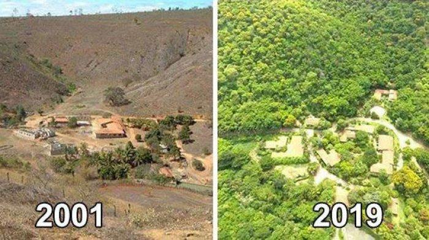
Letakkan file gambar dengan nama "gambar4" (format: jpg, png, webp, gif, dll) di folder "s1-bab-2"
Keragaman Hayati (Biodiversitas)
a. Pengertian Keragaman Hayati
Keragaman hayati atau biodiversitas adalah istilah yang menggambarkan keanekaragaman makhluk hidup di bumi, mulai dari tumbuhan, hewan, hingga mikroorganisme.
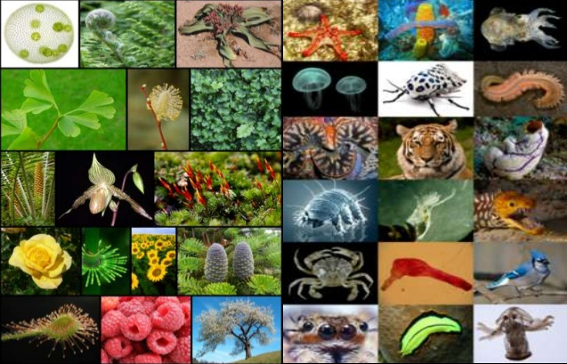
Letakkan file gambar dengan nama "gambar5" (format: jpg, png, webp, gif, dll) di folder "s1-bab-2"
Keragaman ini tidak hanya berarti banyaknya spesies, tetapi juga mencakup perbedaan bentuk, fungsi, dan peran setiap makhluk hidup dalam menjaga keseimbangan lingkungan. Keragaman hayati terbentuk melalui proses panjang evolusi dan adaptasi terhadap lingkungan yang terus berubah. Semakin tinggi tingkat keanekaragaman hayati suatu wilayah, semakin kuat pula daya tahan ekosistemnya terhadap gangguan seperti kekeringan, wabah penyakit, atau perubahan iklim.
b. Tingkatan Keragaman Hayati
Keragaman hayati terbagi menjadi tiga tingkatan utama:
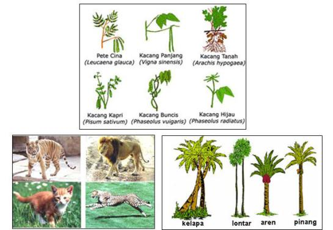
Letakkan file gambar dengan nama "gambar6" (format: jpg, png, webp, gif, dll) di folder "s1-bab-2"
- Keragaman genetik - Merupakan variasi gen dalam satu spesies. Contoh: berbagai varietas padi lokal (padi merah, padi hitam, padi putih) yang berbeda rasa, warna, dan daya tahan terhadap hama. Variasi ini memungkinkan petani menyesuaikan jenis tanaman dengan kondisi lahan dan iklim setempat.
- Keragaman spesies (jenis) - Menunjukkan keanekaragaman antarspesies di dalam suatu ekosistem. Contoh: di sawah terdapat padi, belalang, katak, ular, dan burung yang saling berinteraksi membentuk rantai makanan.
- Keragaman ekosistem - Adalah perbedaan antar ekosistem di bumi. Contoh: ekosistem sawah berbeda dengan hutan, kolam, atau pesisir pantai. Setiap ekosistem memiliki kondisi lingkungan dan komunitas makhluk hidup yang khas.
c. Pentingnya Keragaman Hayati
Keragaman hayati sangat penting untuk kehidupan di bumi karena menjadi dasar bagi keseimbangan dan keberlanjutan ekosistem. Beberapa manfaat utamanya antara lain:
- Sumber pangan dan obat-obatan - Tumbuhan dan hewan menyediakan bahan makanan serta obat alami. Misalnya, jahe dan kunyit sebagai obat tradisional.
- Menjaga keseimbangan ekosistem - Setiap makhluk hidup punya peran. Hilangnya satu jenis makhluk dapat mengganggu rantai makanan dan menyebabkan ketidakseimbangan alam.
- Sumber ekonomi dan budaya - Keanekaragaman hayati mendukung kegiatan ekonomi seperti pertanian, perikanan, dan pariwisata alam. Selain itu, beberapa spesies memiliki nilai budaya dan spiritual di masyarakat.
- Penunjang ilmu pengetahuan dan teknologi - Variasi genetik makhluk hidup menjadi bahan penelitian untuk mengembangkan varietas unggul di bidang pertanian, peternakan, dan bioteknologi.
d. Keragaman Hayati di Lingkungan Desa
Lingkungan desa merupakan contoh nyata wilayah dengan keragaman hayati tinggi. Dalam satu area kecil saja, bisa ditemukan beragam bentuk kehidupan:
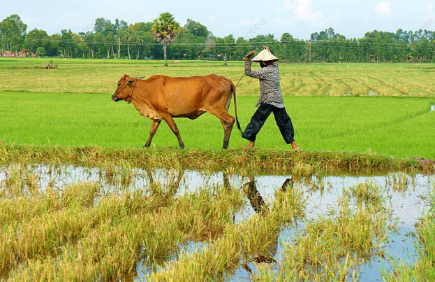
Letakkan file gambar dengan nama "gambar7" (format: jpg, png, webp, gif, dll) di folder "s1-bab-2"
- Tanaman pangan dan hortikultura: padi, jagung, sayur, buah, dan tanaman obat keluarga.
- Hewan ternak: ayam, sapi, kambing, itik.
- Serangga bermanfaat: lebah, kupu-kupu, capung, dan cacing tanah.
- Mikroorganisme tanah: jamur dan bakteri pengurai yang membantu menyuburkan tanah.
Keragaman ini mendukung sistem pertanian berkelanjutan jika manusia menjaga keseimbangan lingkungan. Namun, bila dikelola secara berlebihan—misalnya penggunaan pestisida dan pupuk kimia tanpa kontrol—keragaman ini bisa menurun drastis.
Keseimbangan Alam dan Dampaknya (Perubahan Iklim, Cuaca, dan Musim)
a. Pengertian Keseimbangan Alam
Keseimbangan alam adalah kondisi ketika komponen biotik (makhluk hidup) dan abiotik (unsur tak hidup seperti air, udara, tanah, cahaya, dan suhu) saling berinteraksi secara stabil dan harmonis. Dalam keadaan seimbang, jumlah makhluk hidup di alam cenderung tetap, karena setiap perubahan di satu sisi akan diimbangi oleh reaksi alami di sisi lain.
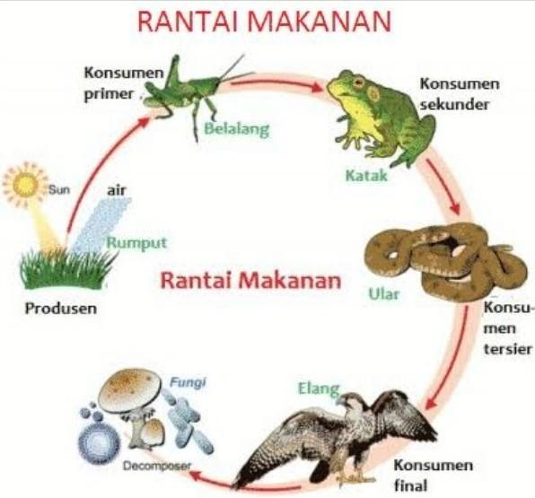
Letakkan file gambar dengan nama "gambar8" (format: jpg, png, webp, gif, dll) di folder "s1-bab-2"
Contoh sederhana: Ketika populasi belalang meningkat, jumlah tanaman berkurang. Namun karena makanan terbatas, populasi belalang pun menurun. Akhirnya tanaman kembali tumbuh. Inilah contoh mekanisme keseimbangan alami.
b. Faktor yang Mempengaruhi Keseimbangan Alam
Keseimbangan alam dapat terganggu jika salah satu faktor berikut berubah secara ekstrem:
| Faktor Alamiah | Faktor Aktivitas Manusia |
|---|---|
| Letusan gunung berapi | Deforestasi (penebangan hutan berlebihan) |
| Gempa bumi dan tsunami | Penggunaan pestisida dan pupuk kimia berlebihan |
| Perubahan cuaca ekstrem | Polusi udara, air, dan tanah |
| Kekeringan panjang | Penangkapan ikan atau hewan secara berlebihan |
Ketika faktor-faktor ini berubah, ekosistem menjadi tidak seimbang: rantai makanan rusak, spesies tertentu punah, dan bencana alam makin sering terjadi.
c. Perubahan Iklim dan Cuaca
Cuaca adalah kondisi udara pada waktu dan tempat tertentu (misalnya hari ini panas, besok hujan). Sedangkan iklim adalah pola cuaca rata-rata dalam jangka waktu lama (puluhan tahun). Perubahan iklim berarti adanya pergeseran pola cuaca yang berlangsung lama akibat meningkatnya suhu global.
Hal ini disebabkan oleh efek rumah kaca — gas-gas seperti CO₂ dan CH₄ menahan panas di atmosfer sehingga suhu bumi meningkat.
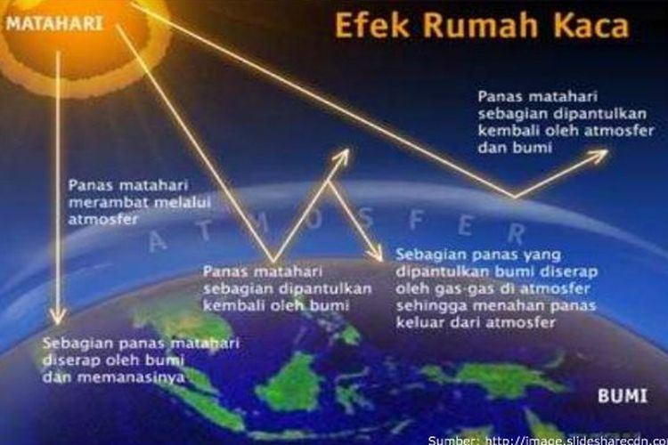
Letakkan file gambar dengan nama "gambar9" (format: jpg, png, webp, gif, dll) di folder "s1-bab-2"
Dampak perubahan iklim:
- Musim kemarau lebih panjang, musim hujan tidak menentu.
- Tanaman gagal panen karena suhu ekstrem.
- Hewan kehilangan habitat atau berpindah tempat.
- Permukaan laut naik karena mencairnya es di kutub.
d. Cuaca dan Musim di Indonesia
Indonesia memiliki dua musim utama:
- Musim Hujan (Oktober–Maret) — curah hujan tinggi, cocok untuk pertanian padi dan tanaman air.
- Musim Kemarau (April–September) - curah hujan rendah, suhu tinggi, cocok untuk pengeringan hasil panen dan kegiatan perikanan darat.
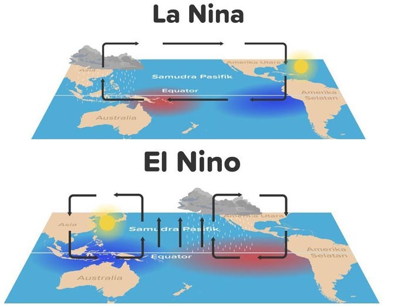
Letakkan file gambar dengan nama "gambar10" (format: jpg, png, webp, gif, dll) di folder "s1-bab-2"
Selain dua musim itu, Indonesia mengalami perubahan musiman akibat fenomena El Niño (kemarau panjang) dan La Niña (hujan berlebih). Kedua fenomena ini terjadi karena perubahan suhu permukaan laut di Samudra Pasifik yang mempengaruhi arah angin dan pola hujan di seluruh dunia.
e. Dampak Ketidakseimbangan Alam terhadap Kehidupan
Keseimbangan alam yang terganggu menimbulkan efek domino yang merugikan makhluk hidup:
| Bidang | Dampak Ketidakseimbangan Alam |
|---|---|
| Pertanian | Gagal panen akibat cuaca ekstrem, tanah kehilangan unsur hara, meningkatnya hama. |
| Perikanan | Menurunnya populasi ikan karena polusi air atau suhu meningkat. |
| Kesehatan | Penyebaran penyakit akibat lingkungan kotor dan air tercemar. |
| Sosial-Ekonomi | Pendapatan petani menurun, migrasi penduduk meningkat, konflik sumber daya. |
f. Upaya Menjaga Keseimbangan Alam
Untuk memulihkan dan menjaga keseimbangan lingkungan, manusia harus melakukan tindakan berbasis sains dan kesadaran ekologis:
- Reboisasi dan penghijauan kembali.
- Pengelolaan sampah dan limbah rumah tangga secara bijak.
- Mengurangi emisi karbon dengan menanam pohon dan bersepeda.
- Menghemat energi dan air dalam kegiatan harian.
- Mengembangkan pertanian berkelanjutan (organik dan ramah lingkungan).
- Edukasi lingkungan di sekolah dan masyarakat.
Struktur dan Interior Bumi (Litosfer, Hidrosfer, dan Atmosfer)
a. Pengantar
Bumi adalah satu-satunya planet dalam tata surya yang diketahui mendukung kehidupan. Kemampuan ini berasal dari komposisi dan struktur lapisannya yang menyediakan tanah, air, dan udara — tiga unsur utama penopang kehidupan. Tiga lapisan utama tersebut disebut litosfer, hidrosfer, dan atmosfer.
b. Litosfer (Lapisan Padat Bumi)
Litosfer berasal dari kata lithos (batu) dan sphaira (lapisan). Ini adalah lapisan paling luar bumi yang terdiri dari batuan padat dan tanah tempat manusia berpijak.
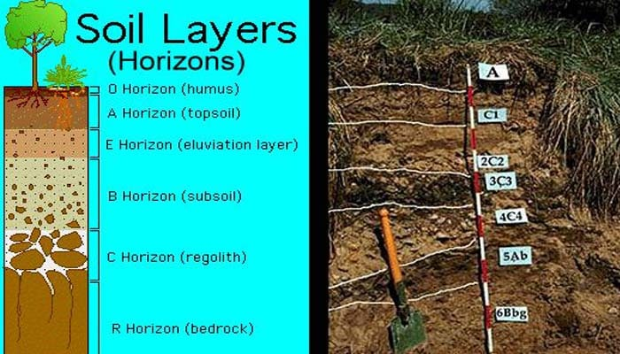
Letakkan file gambar dengan nama "gambar11" (format: jpg, png, webp, gif, dll) di folder "s1-bab-2"
Ciri-ciri:
- Tebal ±70 km di bawah benua dan ±30 km di bawah lautan.
- Tersusun dari lapisan batuan: kerak, mantel, dan sebagian inti atas.
- Menjadi tempat berlangsungnya proses geologi seperti gempa bumi, gunung berapi, dan pembentukan pegunungan.
Komponen utama:
- Batuan beku (igneous rock): terbentuk dari magma yang membeku. Contoh: granit, basalt.
- Batuan sedimen: terbentuk dari endapan partikel di sungai atau laut. Contoh: batu pasir, kapur.
- Batuan metamorf: hasil perubahan batuan beku atau sedimen akibat tekanan dan suhu tinggi. Contoh: marmer, sabak.
Peran Litosfer bagi Kehidupan:
- Menyediakan tanah subur untuk pertanian.
- Mengandung mineral dan bahan tambang untuk industri.
- Menjadi tempat hidup tumbuhan, hewan, dan manusia.
c. Hidrosfer (Lapisan Air Bumi)
Hidrosfer berasal dari kata hydro (air). Lapisan ini mencakup semua bentuk air di bumi: laut, danau, sungai, air tanah, salju, dan uap air di udara.
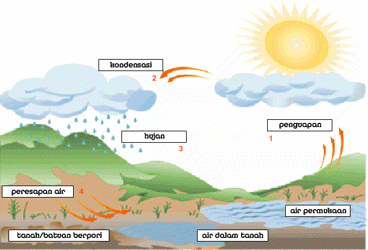
Letakkan file gambar dengan nama "gambar12" (format: jpg, png, webp, gif, dll) di folder "s1-bab-2"
Fakta penting:
- Sekitar 70% permukaan bumi tertutup air.
- Sebagian besar (±97%) berupa air laut asin, sisanya air tawar yang tersimpan di sungai, danau, es, dan air tanah.
Peran Hidrosfer:
- Menjaga suhu bumi tetap stabil melalui penguapan dan hujan.
- Menjadi habitat makhluk hidup akuatik seperti ikan, ganggang, dan plankton.
- Sumber kehidupan — air diperlukan untuk tumbuhan, hewan, dan manusia.
- Media transportasi dan sumber energi (PLTA, arus laut, gelombang).
Siklus Air (Daur Hidrologi):
Air di bumi terus bergerak melalui proses: Evaporasi → Kondensasi → Presipitasi → Infiltrasi → Aliran permukaan.
d. Atmosfer (Lapisan Udara Bumi)
Atmosfer adalah lapisan gas yang menyelimuti bumi hingga ketinggian ±560 km. Lapisan ini melindungi kehidupan dari radiasi berbahaya dan menjaga suhu bumi tetap sesuai untuk kehidupan.
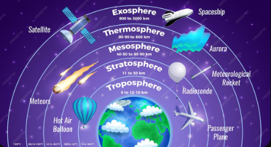
Letakkan file gambar dengan nama "gambar13" (format: jpg, png, webp, gif, dll) di folder "s1-bab-2"
Fungsi Atmosfer:
- Melindungi bumi dari radiasi matahari berlebih.
- Mengatur suhu dan cuaca global.
- Menyediakan oksigen untuk respirasi dan karbon dioksida untuk fotosintesis.
- Menjadi jalur komunikasi gelombang radio dan satelit.
Lapisan-lapisan Atmosfer:
| Lapisan | Ketinggian (km) | Ciri Utama |
|---|---|---|
| Troposfer | 0–12 | Tempat terjadinya cuaca, awan, hujan. |
| Stratosfer | 12–50 | Mengandung lapisan ozon yang menyerap sinar UV. |
| Mesosfer | 50–80 | Membakar meteor yang masuk ke atmosfer. |
| Termosfer | 80–500 | Terdapat aurora dan pantulan gelombang radio. |
| Eksosfer | >500 | Lapisan terluar yang berangsur ke ruang angkasa. |
e. Hubungan Litosfer, Hidrosfer, dan Atmosfer
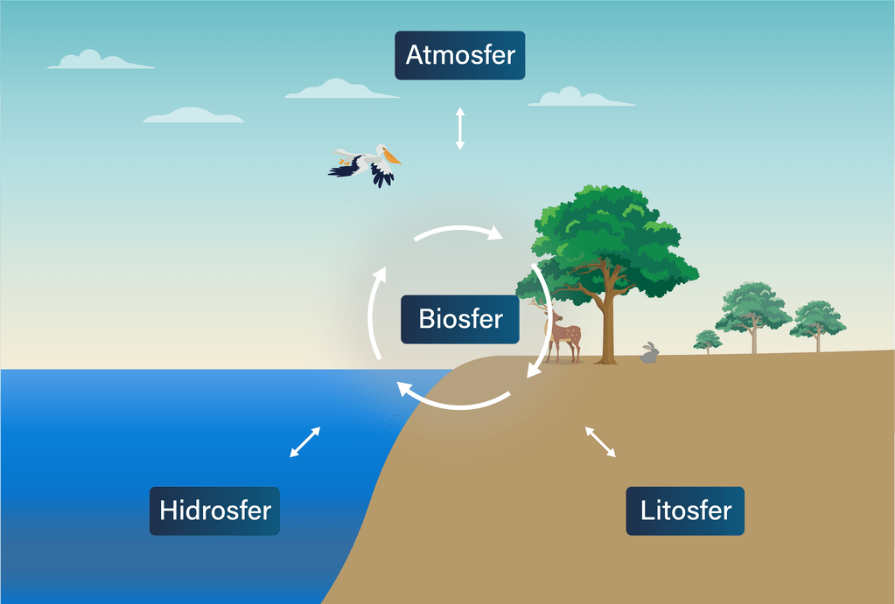
Letakkan file gambar dengan nama "gambar14" (format: jpg, png, webp, gif, dll) di folder "s1-bab-2"
Ketiga lapisan ini saling berinteraksi membentuk sistem bumi. Contoh keterkaitan:
- Hujan (atmosfer) membasahi tanah (litosfer) dan mengisi sungai (hidrosfer).
- Letusan gunung (litosfer) memengaruhi kualitas udara (atmosfer) dan suhu air (hidrosfer).
- Polusi udara (atmosfer) dapat mengasamkan hujan dan merusak tanah serta air.
Keseimbangan antara ketiganya sangat penting. Gangguan pada satu lapisan (misalnya polusi udara) bisa berdampak pada lapisan lainnya — dan akhirnya mengganggu kehidupan makhluk hidup di biosfer.